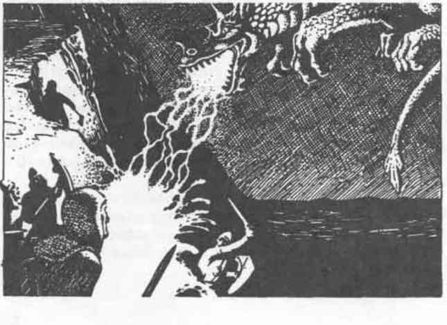

格伦格 · Grung
Grung
 |
|
Grung 是高度领地化、好战的类人生物，居住在沼泽和湿地。他们非常像青蛙和其他两栖动物，也可能确实由它们进化而来。
外貌：Grung 身高约 3 英尺，下半身很像巨蛙或蟾蜍，拥有有力的腿和巨大的蹼足。不过，它们的上半身发育得更好，前肢肌肉发达，有可对握的拇指，头部更小，也更像人类。它们直立行走，以快速而短促的跳跃移动。它们无法像青蛙、蟾蜍或蜥怪那样完成惊人的跳跃和腾跃。然而，进化赋予它们智慧和能够使用工具的前肢，却带走了青蛙拥有的可抓握舌头；作为替代，Grung 宽大的嘴里长满锋利的肉食牙齿。
Grung 拥有其他两栖动物那样光滑的皮肤。由于通过皮肤呼吸，它们必须保持皮肤湿润。它们的颜色类似牛蛙：背部是斑驳的绿色和棕色，腹部逐渐变成白色或黄色。它们的眼睛比进化上的祖先更小，并由骨质脊保护，瞳孔是黑色的红眼。雄性略小于雌性，但两个性别都同样具有攻击性和危险性。
战斗：由于体型小，Grung 偏好伏击而不是正面攻击。他们最喜欢的战术是隐藏起来，等敌人——旅行者，或来自另一部落的一群 Grung——进入杀戮区后，再用短弓和矛开火。这些攻击对非 Grung 尤其致命，因为他们总会在箭头和矛尖上涂毒。毒素由 Grung 的皮肤分泌；使用武器前，Grung 会把武器在自己的皮肤上擦过，以沾上毒素。这种毒素对非 Grung 高度致命；被击中的生物必须对毒素豁免，否则会在 1–4 分钟内以痛苦的方式死亡。Grung 对这种毒素免疫。毒素接触空气后会迅速分解，10 分钟内变得惰性。Grung 死亡 10 分钟后，其皮肤也不再带毒。
虽然更喜欢使用弓和矛，Grung 也能狠狠地咬人。它们的唾液也含有毒素，但浓度远低于皮肤中的毒素；豁免获得 +2 加值。
如果 Grung 的皮肤干燥，它们就会死亡。它们必须每三小时把自己浸入水中，否则会窒息，因为干燥的皮肤无法让足够的氧气通过。每次浸泡至少持续 1 分钟才有效。Grung 聚居地周围的水会被它们的有毒分泌物污染。任何非 Grung 饮用这种水，都必须以 +3 加值对毒素豁免，否则会恶心 2–8 轮（攻击和防御受到 -1 处罚）。
栖息地／社会：Grung 是好战而极度重视领地的生物。他们通常把部落聚居地周围一英里以内的所有土地都视为自己的领地。任何不明智地进入这片领地的人，都会立刻成为攻击目标。其他部落的 Grung 也一样是攻击对象；邻近部落之间的激烈小规模边境战争才是常态。与 Grung 的大多数遭遇，都是与四处游荡的战队发生的。
Grung 聚居地是由粗陋住所组成的杂乱集合，有时会隐藏在巨大的死树内部。一个部落最多有 100 名成员，其中 25% 是幼体。和它们所起源的青蛙一样，Grung 产卵，后代经历蝌蚪阶段（AC 10；MV //12”；HD 1/2；#AT 1；Dmg 1；AL LE）。经过 3 个月，蝌蚪吸收尾巴并长出四肢，然后爬出水面，以未成年 Grung 的身份加入部落。这些未成年 Grung 拥有 1–1 HD，从离开水面起就能够移动和战斗。它们会在另外 6 个月内完全成熟。
Grung 部落实行母系制度。战斗首领都是女性，部落首领是所有战斗首领中最强的战士。下属女性随时可以挑战首领、取代其位置；这类挑战总是以死亡告终。每个部落还有一名女性萨满，等级最高可达 3 级。战斗首领、萨满和首领本人，都通过敌人的骨头制成的装饰物来辨认。在部落内部，男性处于支配地位，在任何决策中都没有发言权。
Grung 偶尔会俘虏活人，尤其是其他 Grung。这些俘虏和敌人的尸体构成部落宴会的主菜。
Grung 说自己的语言，也能以一种初级方式与青蛙、蟾蜍和其他沼泽两栖动物交流。他们对学习通用语，或其他半人类和类人生物的语言没有兴趣：其他生物是用来吃的，不是用来交谈的。
生态位：Grung 不在吃粗心的旅行者（或彼此）时，就会捕猎老鼠和其他沼泽哺乳动物。他们几乎没有天敌——皮肤中的毒素使他们成为致命的食物。不过，某些巨蛇对这种毒素免疫，因此构成对 Grung 最大的威胁。Grung 是广阔沼泽中对旅行者最致命的生物之一。